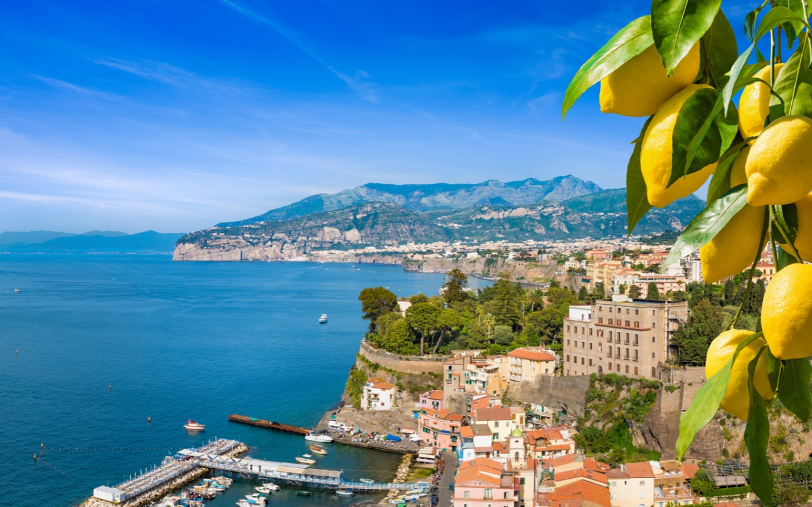
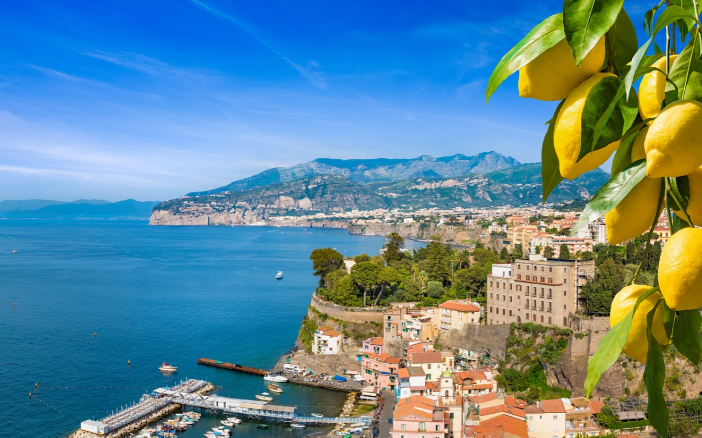

Descrizione dell'itinerario
La Costiera Amalfitana è una delle destinazioni più suggestive d’Italia: borghi pittoreschi a picco sul mare, panorami mozzafiato e tradizioni antiche si intrecciano lungo questo tratto di costa unico al mondo. Durante il tour visiteremo le località più iconiche, tra limoneti profumati, mare cristallino e scorci indimenticabili.
 
